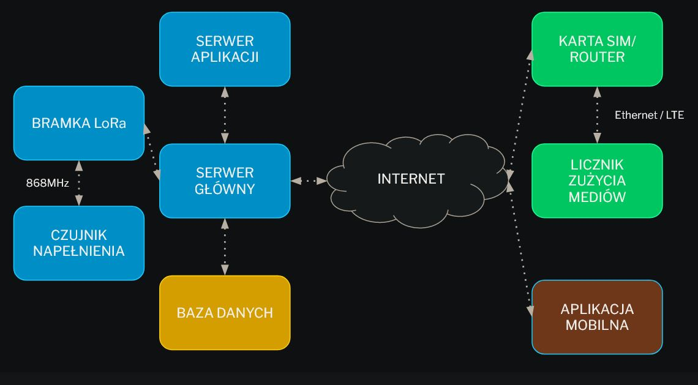

System wsparcia dystrybucji mediów domowych w czasie pandemii
Główne założenia systemu
umożliwia pozyskanie danych z liczników wody/energii itp. bez konieczności wizyty pracownika firmy
monitorowanie i powiadamianie o zużyciu mediów przez klienta końcowego (funkcja oszczędzania)
umożliwia prosty dostęp do rachunków, informacji o bieżącym zużyciu, możliwość ustawienia celu zużycia
nadzorowanie stanu zapełnienia kontenerów na śmieci na osiedlach mieszkaniowych
